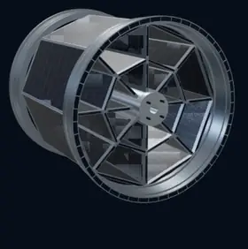
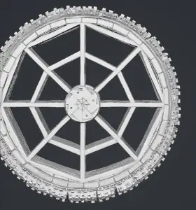
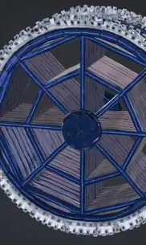

FIELD NOTES / GEOMETRY FIRST
Astra vs Meshy:
a solar wheel rim puts geometry first.
An attractive wheel is not necessarily the right wheel. We compared supplied screenshots of the creator's photovoltaic rim design, asking whether the structure stays coherent and the intended openings stay open.
01 / THE BRIEF
The empty space is part of the design.
The creator's example calls for eight main radial arms, eight larger and eight smaller circumferential supports, a central hub arrangement and two flange assemblies. Photovoltaic surfaces belong on the designated structural members, not across the intended openings. These counts describe this particular example, not every possible rim.
The key requirement is therefore not simply “make a wheel with solar panels.” It is preserve the specified structure, including the spaces where no material should exist. A panel that closes a required opening would change the design, however convincing its material looks.
02 / THE EVIDENCE
Show the stronger results, not just the failures.



Evidence: three illustrative crops from ten creator-supplied screenshots of one design. Images were cropped to remove unrelated interface/account information, resized and WebP-compressed; the models were not retouched or regenerated. These are thumbnails, not full-resolution texture comparisons. Different views and variants must not be treated as matched before-and-after exports. Image provenance and hashes.
03 / WHAT WE CAN SAY
A visual advantage is not an engineering pass.
| Criterion | Astra-assisted WORLDIFACT | Meshy |
|---|---|---|
| Overall structure | The angled views read as a regular, coherent assembled rim with visible depth. | The strongest grey view has a recognizable open framework. Other screenshots show separate disc-like pieces or a less orderly assembly. |
| Intended openings | Some gaps are visible, but broad surfaces and overlapping layers need a through-hole check. | The untextured example visibly preserves openings. Other previews are more panelled. Exact topology is unverified. |
| Surface appearance | Orderly dark photovoltaic-style grids and metallic framing; the hub and some details look simplified. | A detailed outer edge and stronger decorative texture in the blue version. Detail alone does not establish fidelity. |
| Technical fidelity | Not established: no exported meshes, dimensional comparison, section views or source-to-output deviation measurements were reviewed. | |
| Time, cost and reliability | Not measured under matched conditions. No winner or success-rate claim is justified. | |
Where WORLDIFACT looks stronger: the visible repetition, separation of the flange assemblies and presentation of the complete three-dimensional form. For continuing this particular design, that is the preview we would choose as a starting point.
Where WORLDIFACT still needs work: the simplified hub and broad panel/support surfaces require comparison against the original drawings. A bright triangular area might be a legitimate support, a surface behind an opening or an unwanted closure. A screenshot alone does not distinguish those cases reliably.
What Meshy deserves credit for: its best grey version captures an open framework rather than a solid face. Other supplied results show inconsistency, including separated pieces and stray-looking thin geometry, but the selection is too small and uncontrolled to estimate how often those issues occur.
04 / THE LIMITS
What this comparison does not prove.
The screenshots show the Meshy 7.1 Flagship label and a WORLDIFACT interface with SLOW · QUALITY selected. We use “Astra” as the creator's label for the WORLDIFACT-assisted workflow, not as independent verification of the exact provider model or job configuration. This compares two workflows and their supplied outputs, not isolated AI models.
Ten screenshots do not mean ten independent trials. We did not verify identical prompts, reference processing, settings, seeds, iteration budgets or camera and lighting conditions. The original design documents were not checked as a dimensioned CAD ground truth. No new generation was commissioned for this article.
Meshy displays roughly 1.45–5.89 million faces across the supplied variants with triangular topology selected. These are interface readings, not an audit of the exports. The corresponding WORLDIFACT count is unavailable. More triangles cannot establish whether an opening is in the correct place; neither can a “printability” indicator establish design conformity or suitability for a vehicle.
We also cannot conclude that texturing filled the openings: the screenshots may show different variants and viewpoints. Meshy's documentation treats mesh generation and retexturing as separate operations.[2] Confirming a geometry change would require the relevant before-and-after mesh files.
Attachment presence is not evidence that its contents influenced generation. WORLDIFACT's reviewed project-file implementation labels local/vault files as references until a parser/import pipeline actually feeds them into the generation process.[3]
05 / THE NEXT TEST
Test the geometry, then judge the finish.
A fair follow-up should use the same separately cropped front, rear and side references, record the exact settings and prompt, and retain every attempt. Several views printed on one sheet are not equivalent to separately labelled camera views. Meshy's current multi-image documentation specifies images of the same object from different angles and identifies the first image as the primary view for 7.1.[1]
We would first inspect both exported models without textures, using matching orthographic cameras, wireframes and section views. Check the number and placement of members, flange depth, hub mounting features and uninterrupted passages through every required opening. Then compare dimensions, topology and file size, and only after that assess photovoltaic materials under the same lighting. Log elapsed time and the actual cost of every attempt rather than comparing interface estimates.
Our conclusion: Astra/WORLDIFACT is the more promising visible starting point for this particular assembled rim. Meshy remains a credible comparator, especially its openwork grey result. The next milestone is not a prettier render: it is a demonstrably faithful model.
Sources and disclosure
Published by the WORLDIFACT team about its own product; this is not an independent laboratory benchmark or an endorsement by either provider. The creator supplied the screenshots and design brief. The private source models and full design documents are not republished here.
- Meshy: Multi-Image to 3D API documentation — input/view conventions and generation settings. Accessed 21 September 2026.
- Meshy: Retexture API documentation — retexturing an existing model. Accessed 21 September 2026.
- WORLDIFACT evidence ledger, reviewed 20 September revision — project-reference limitations, not proof of these particular generation jobs.
Reference brief: the creator's photovoltaic land-vehicle rim description dated 17 July 2025, together with the explicit instruction to preserve its open spaces. Patent grant status, manufacturing readiness and road-use safety were not assessed.